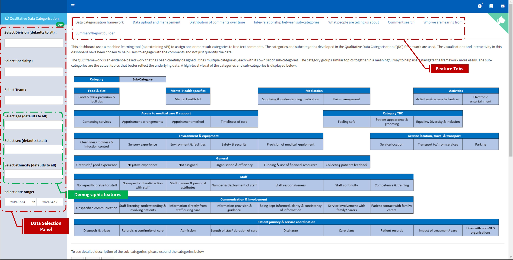

Dashboard
Introduction
The Experience dashboard is the front-end tool for the PatientExperience-QDC project. It ties the back-end, the Pxtextmining, to the data source via an API and presents metrics and graphs to help clinical staff and managers gain quick insight from patient experience data and further explore the free text comments. A key focus of the dashboard is to present people with the categorisation of qualitative data.
The dashboard automates the labelling/categorization of free text data (patient experience comments) using a multilabeling approach and gives users the functionality to interact with the data, do boolean searching on the text data, compare relationships across topics, visualize trends in the data, download reports, etc.
The functionalities highlighted here are based on version 0.7.2 of the experiences dashboard package. Please go here to compare these changes to those of the previous version.
The structure
The dashboard is built using golem, an R package for building production-ready Shiny applications. The dashboard saves and loads data from a database and gives users the functionality to upload their unlabeled comment data (in several formats such as .csv or .xlsx) for labelling. The dashboard processes the feedback data and presents several insights using interactive tables, charts and other data formats for easy digestion of the data. Figure 1 below shows the schematic diagram of the dashboard’s structure. We have the source code here.

Getting started
New Trust Onboarding Process
As a new user, to begin using the dashboard, you need to reach out to the project team so they can establish your organization’s version of the dashboard. The team will assess your request, arrange a meeting to discuss your requirements and provide an onboarding email enabling you to access the dashboard.
Uploading your data
To access the dashboard contents, you need to upload your data. It is a simple process:
Go to the “data upload and management” tab
Click on the “upload new data” button
Search for the file and click “Import data”
There are a few things to note here. The data must pass the following checks:
Column names: They should follow the names used in the “general_trust_template”. Columns with names other than these are ignored by the dashboard.
Compulsory columns: the following columns must be present in your data no matter your Trust configuration: “date”, “location_1”, “question_1”, “fft_score”
Additional Columns: Your data must contain other columns depending on your Trust configuration agreed upon during onboarding. e.g. if you indicated you would like to filter using demographic features such as Sex, and Age, then the “sex” and “age” column must be present in your uploaded data. Likewise, if you indicated you needed to filter using the 3 clinical locations, then the “location_1”, “location_2”, and “location_3” columns must be present in your data.
File extension: The following file extensions can be used to upload data: .csv, .txt, .xls, .xlsx, .rds, .fst, .sas7bdat, .sav. However, we recommend using .xlsx (Excel format)
Date format: As much as possible, the date format should be in dd/mm/yyyy e.g. 30/09/2021, 27/10/2022.
Using the dashboard
Below are the key features of the dashboard. Figure 2 below shows a screenshot of the dashboard landing page alongside all the feature tabs and the data selection options.
In this section, I will discuss the key features of the dashboard.

Data Selection
{kind=link}
Tab-specific filters - affect a specific tab
Some of the feature tabs (such as the “Distribution of comments over time” and “Inter-relationship between sub-categories” tab) have additional data filtering features that allow you to further drill down into the data and visualise smaller samples of the data in that particular tab. These tab-specific filters don’t affect the data that is viewed in other feature tabs of the dashboard.
Feature tabs
Data categorisation framework
This tab contains a brief introduction of the data categorisation framework developed as part of this project and used to assign the sub-categories to the free text comments. see the framework for more details.
Data upload and management section

In this tab, users have the functionality to
Assign label to new data: Users can upload their data and once this data is uploaded the pxtextmining API is called to assign sub-categories to the free comments and the data is saved in the database. Users can then refresh their browsers to assess the newly uploaded data alongside their existing data.
Manage Data: Users can delete rows within their data right from the dashboard environment.
Download historical data: Users can download the whole underline data currently loaded into the dashboard.
Download complex data: We identify that there may be situations where the machine learning model might be wrong in the sub-categories assigned to comments, and this may be especially true for very long comments. We set some criteria to catch those complex comments for further interrogation. Below are the simple criteria used to flag a comment as a complex comment (if any are met):
The comment has over 50 words
The comment has over 3 labels attached
Users can download the data containing complex comments from this section of the dashboard.
Distribution of comments over time

It shows a visual of the monthly distribution of comments in the sub-category/super-category levels. This visual should be used to help identify patterns in the data, particularly where there are clusters of comments around a particular sub-category.
The plot is interactive and the box increases with the volume of comments. Clicking on any of the boxes will show the underlying comments (alongside key columns such as date, FFT question type, FFT score and assigned sub-categories and super-categories). The comments should be read to explore explanations for any pattern seen on the visual and to carry out any additional qualitative analysis as required.
Inter-relationship between sub-categories
This shows an upset plot, which is a type of visualisation for analysing data with a large set (in our case sub-categories). The plot allows users to see the number of comments in the sub-categories association, i.e., you can see the sub-categories that occur together more/less often based on the number of comments they have in common. Users can’t interact with this plot but they have the option to scroll down and select two or three sub-categories to see the underlying comments (alongside key columns such as date, FFT question type, FFT score and assigned sub-categories and super-categories) they have in common.
There are two sub-tabs in this tab that allow you to view the relationship within a category (e.g. staff) or across all the categories. The column bar on the plot shows the total number of comments in each relationship. A selection feature is provided to set the minimum number of comments a relationship needs to have in other to show on the pot.
{kind=link}
The visual should be used to identify sub-categories with relationship and the sub-category selection functionalities should be used to see the underlined comment and investigate the pattern. Please see our post on using an upset plot to explore the relationship between large categorical data to understand more about upset plots.
There is a known issue with the inter-relationship plots not fitting the screen for users on a small screen. Here is a quick fix:
a. Please access your browser setting (three dots (…) at the top right of your browser)
b. Zoom out to 75% or 80%
What people are telling us about
This shows a table of the number of comments in each sub-category. Users can select a sub-category from the table to see all the comments relating to the selection.
Who we are hearing from
Two types of charts are shown here for each demographic variable
- Distribution of the demographics in the sample.
- The average percentage of FFT score for each group in the demographic feature.
Summary/Report builder
This tab contains few information and functionalities. These are

Number of samples in filtered Selection
Come here to quickly see the volume of comments that are visualised in the dashboard. The tab shows the total number of comments/responders in the current selection (based on the filter applied from the sidebar) and the total number of comments/responders in the database (ignoring all the sidebar filters). The figure in the “current selection” represents the actual data that you are viewing in the dashboard. If you didn’t select any filter from the sidebar, then the “database” figures will be the same as that of the “current selection” figures.

SPC of the FFT score
This shows the Statistical Process Control (SPC) chart of the FFT score. The SPC chart is simply a line graph showing the FFT score in chronological order, with the score on the vertical (y) axis, the date on the horizontal (x) axis and the average score shown as the centre line.
Report Builder
There are four options to select, each adding sections to the generated report (Word document).
% categories table: adds a table for the number of comments assigned to each category and percentage contributions of each category/topic
Verbatim comments: the actual comments from the selected data
Sample demographics: The demographic graphs of the selected data
FFT graph: the FFT plot
What Next?
We are constantly improving the dashboard to better serve our users. As we work on enhancing its features, we would greatly appreciate your feedback. How have you utilized the dashboard? What benefits have you gained from it? Are there any changes or adjustments you would recommend? Additionally, what new features would you like to see added? Your input will help us make the dashboard even more effective and useful.
Please contact us via PHUdatascience@nottshc.nhs.uk (and cc chris.beeley1@nhs.net)
Comment Search
Users can make a Boolean search for comments with specific keyword(s). The result of the search can be downloaded. The keywords used in the search are used as the filename when saving the data.